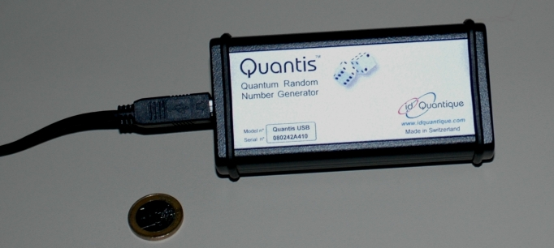

Quantum Random Chapter 2:
Test, Application, Commercial Systems
On this page, the random numbers recorded in the last chapter are tested. As an application of random numbers, quantum music according to Mozart is presented. Finally, the difference between commercially availabe quantum random generators and our system is described.
Test of randomness
For sensitive applications like e. g. cryptography, the random numbers must be absolutely random. How can it be tested whether or not the quantum random number is absolutely random? Unfortunately there is no test method which proves absolute randomness. The recorded random number can only be tested on repetition, correlations or patterns. Even if a random number passes e. g. 20 different tests, this is no proof of absolute randomness.
For the application in school, tests to be watched could be the frequency of decimal numbers, possible development of patterns in 2D or 3D diagrams or the frequency of identical following binary numbers (0, 00, 000, 0000, ...). It is also a good idea to calculate Pi with the Monte Carlo method. The quantum random numbers can be compared with computer-generated pseudo-random numbers here. In our laboratory, for each quantum random experiment for school lessons, a suitable test report with the comparison between quantum and pseudo-random numbers can be generated automatically [example in German].
For industrial use, there are the commercial test methods of the "National Institute of Standards and Technology (NIST)" [Nis08]. The test includes 15 individual test methods in which pattern formation or the correlation of random numbers is tested. The NIST test is deemed the standard test for pseudo random numbers with computer scientists. We have recorded 100MBit of binary quantum random numbers. The dataset has successfully passed all 15 NIST tests without being priorly edited (e. g. with the von-Neumann-algorithm [Neu51]). With this test, the quantum random numbers can be considered random with a 99,9 % reliability. The test protocol can be downloaded here [PDF]. Further test methods like e. g. the Diehard-Test [Mar95] have also been carried out successfully.
Quantum music according to Mozart
Random numbers have their place in many areas: in cryptography for generating codes, in industry and research for simulation purposes, in our daily lives with mobile phones, computer games and bank transfers, ... . Random numbers can also be used in music. In the year 1793, the musical dice game by Mozart came out [Moz93]. With this musical game, a piece of music can be composed by throwing a normal pair of dice 16 times. An allocation table matches each number of pips with a beat. The allocation table contains 176 different beats, so that 46 quadrillions of different compositions can be gained. We have combined the musical dice game with the quantum random generator: As soon as ca. 100 binary random numbers (1 or 0) have been generated in our laboratory, "quantum music according to Mozart" is played. The piece of music is composed by the random decision of single photons at the beam splitter. The instruments can be chosen at will. The program "quantum music" resulted from Andreas Strunz' thesis. In the lower example, five quantum music pieces composed by photons can be listened to. After each cycle, the next piece is loaded.
Commercial quantum random generators
The first quantum random generator has been realized by radioactive decay [Ino83] in 1983. Quantum random generators with single photon detectors have been out since 1994 [Rar94], [Ste99], [Jen00], [Sou03]. All experiments do, however, work with dimmed laser light. The idQuantique company has recently started selling quantum random generators as complete USB modules (pic. 1) at prices starting at ca. 600 € [Idq08]. The module does not require external power supply and only has to be connected up to the computer with a USB cable. There are a dimmed laser, a beam splitter cube and two detectors in the module. Per second, 4MBit random numbers are generated.
Why do we need a massive big table and many optical components for our quantum random generator at all (see above) if there is a much easier way? The USB module of the idQuantique company works with dimmed laser light, which is directed onto a beam splitter cube and activates the two detectors. Activating the detectors would, however, also be possible with e. g. thermal energy. For our quantum random experiment it is important that initially, single photons are prepared. We intentionally create the random process by a single photon at the beam splitter (qubit-state). With dimmed laser light, the preparation of single photons and the qubit state is not possible (see under basics). The light in experiments with dimmed laser light can be described classically as an e-m wave. The quantization of the field is not necessary. The quantum random generator is a good solution for many practical applications, but it does not fulfil the concept of single photon quantum random at the beam splitter cube.The experiment set up by us on the quantum random generators with single announced photons has been published for the first time in 2004 [Hai04]. Photonic quantum random generators can also be realized with entangled photons [Owe08] and with the Hong-Ou-Mandel interference [Kwo09].

pic. 1: Quantum random generator "Quantis" by the idQuantique company -
1€ coin for size comparison purposes
Test protocol for the test on the random number: School application, industry test NIST
Quantum music according to Mozart (mp3): piece 1, piece 2, piece 3, piece 4, piece 5
To the next chapter: Quantum random at two beam splitter cubes [klick]
Back to the overview [klick]
Author: P. Bronner, A. Strunz, Mai 2009
Translation: G. Murphy, June 2009